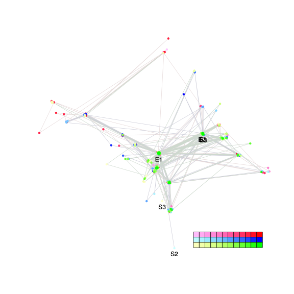
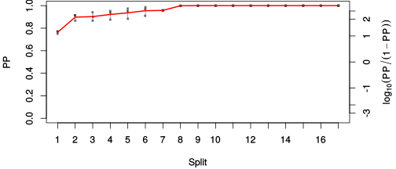
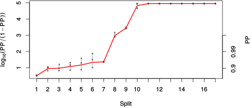

| chain # | burnin | subsample | Iterations (remaining) | command line | subdirectory | directory |
|---|---|---|---|---|---|---|
| 1 | 10000 | 1 | 90000 | bali-phy E1_AA_red3_Lambda_Alpha_Manatees_BetaGamma.fas -s 73453 -n Lambda_Alpha_Manatees_BetaGamma_c1 | Lambda_Alpha_Manatees_BetaGamma_c1-1 | /DATA/work/ONCOGENEVOL/database/trees/Bali-Phy/red3/E1 |
| 2 | 10000 | 1 | 90000 | bali-phy E1_AA_red3_Lambda_Alpha_Manatees_BetaGamma.fas -s 54375 -n Lambda_Alpha_Manatees_BetaGamma_c2 | Lambda_Alpha_Manatees_BetaGamma_c2-1 | /DATA/work/ONCOGENEVOL/database/trees/Bali-Phy/red3/E1 |
| 3 | 10000 | 1 | 90000 | bali-phy E1_AA_red3_Lambda_Alpha_Manatees_BetaGamma.fas -s 96837 -n Lambda_Alpha_Manatees_BetaGamma_c3 | Lambda_Alpha_Manatees_BetaGamma_c3-1 | /DATA/work/ONCOGENEVOL/database/trees/Bali-Phy/red3/E1 |
| P(data|M) = -21862.851 +- 0.878 | Complete sample: 330 topologies | 95% Bayesian credible interval: 60 topologies |

Phylogeny Distribution

| Partition support: Summary |
| Partition support graph: SVG |
| 50% consensus | Newick (+PP) | SVG | |||||
| 66% consensus | Newick (+PP) | SVG | |||||
| 80% consensus | Newick (+PP) | SVG | |||||
| 90% consensus | Newick (+PP) | SVG | |||||
| 95% consensus | Newick (+PP) | SVG | |||||
| 99% consensus | Newick (+PP) | SVG | |||||
| 100% consensus | Newick (+PP) | SVG | |||||
| MAP | Newick (+PP) | SVG | |||||
| greedy | Newick (+PP) | SVG |
{kind=link}
{kind=link}
{kind=link}
{kind=link}
{kind=link}
{kind=link}
{kind=link}
{kind=link}
Alignment Distribution
Partition 1
| Diff | Min. %identity | # Sites | Constant | Informative | ||||
|---|---|---|---|---|---|---|---|---|
| Initial | FASTA | HTML | Diff | 3.99% | 698 | 1 (0.143%) | 660 (94.6%) | |
| Best (WPD) | FASTA | HTML | AU | 30.6% | 1166 | 66 (5.66%) | 532 (45.6%) |


Mixing
| burnin (scalar) | ESS (scalar) | ESS (partition) | ASDSF | MSDSF | PSRF-CI80% | PSRF-RCF |
|---|---|---|---|---|---|---|
| 3972 | 137.3 | 98.265 | 0.017 | 0.048 | 1.006 | 1.012 |
Projection of RF distances for the first 3 chains3D | Variation of split PPs across chains |
Scalar variables
| Statistic | Median | 95% BCI | ACT | ESS | burnin | PSRF-CI80% | PSRF-RCF |
|---|---|---|---|---|---|---|---|
| prior | -1681 | (-1789, -1580) | 358.8 | 752 | 3321 | 1.003 | 1.005 |
| prior_A1 | -1733 | (-1839, -1633) | 384.3 | 702 | 2805 | 1.002 | 1.007 |
| likelihood | -2.179e+04 | (-2.185e+04, -2.171e+04) | 502.3 | 537 | 1075 | 1.006 | 1.009 |
| logp | -2.347e+04 | (-2.354e+04, -2.34e+04) | 280.6 | 962 | 2584 | 0.9996 | 1.009 |
| Heat.beta | 1 | ||||||
| Scale1 | 7.238 | (4.718, 10.46) | 1.018 | 265316 | 150 | 1 | 1.001 |
| S1.F.pi.A | 0.07339 | (0.06634, 0.08056) | 13.15 | 20530 | 308 | 1 | 0.9976 |
| S1.F.pi.R | 0.04296 | (0.03748, 0.04862) | 9.036 | 29880 | 297 | 0.9996 | 1.002 |
| S1.F.pi.N | 0.03693 | (0.03233, 0.04163) | 9.527 | 28339 | 203 | 1 | 1.006 |
| S1.F.pi.D | 0.06246 | (0.05568, 0.06938) | 11.63 | 23223 | 348 | 0.9999 | 0.9995 |
| S1.F.pi.C | 0.05475 | (0.04693, 0.06273) | 9.707 | 27815 | 343 | 1.001 | 1.001 |
| S1.F.pi.Q | 0.04167 | (0.0367, 0.0466) | 9.758 | 27670 | 333 | 1 | 1.005 |
| S1.F.pi.E | 0.05623 | (0.05011, 0.06249) | 32.38 | 8338 | 422 | 0.9998 | 0.9987 |
| S1.F.pi.G | 0.07931 | (0.07043, 0.08872) | 24.26 | 11129 | 498 | 1 | 0.9917 |
| S1.F.pi.H | 0.02469 | (0.02077, 0.02875) | 8.054 | 33523 | 423 | 1 | 0.9972 |
| S1.F.pi.I | 0.04444 | (0.03895, 0.05029) | 8.465 | 31896 | 707 | 0.9997 | 0.9994 |
| S1.F.pi.L | 0.1013 | (0.09187, 0.1106) | 9.561 | 28241 | 246 | 0.9999 | 1.005 |
| S1.F.pi.K | 0.04523 | (0.03983, 0.05089) | 8.464 | 31900 | 346 | 0.9997 | 0.9995 |
| S1.F.pi.M | 0.0204 | (0.01692, 0.02411) | 9.175 | 29427 | 602 | 1.001 | 0.9984 |
| S1.F.pi.F | 0.04761 | (0.04126, 0.05468) | 25.52 | 10579 | 517 | 1.003 | 1.004 |
| S1.F.pi.P | 0.04274 | (0.03624, 0.04948) | 11.65 | 23182 | 343 | 1 | 1 |
| S1.F.pi.S | 0.05981 | (0.0536, 0.06632) | 12.48 | 21631 | 704 | 1 | 0.995 |
| S1.F.pi.T | 0.06259 | (0.05625, 0.06915) | 10.02 | 26956 | 840 | 1 | 0.9954 |
| S1.F.pi.W | 0.009082 | (0.006115, 0.01251) | 8.394 | 32164 | 375 | 1.002 | 1.005 |
| S1.F.pi.Y | 0.02518 | (0.02062, 0.02994) | 8.47 | 31877 | 226 | 0.9994 | 0.9935 |
| S1.F.pi.V | 0.06805 | (0.061, 0.07538) | 12.23 | 22074 | 436 | 1 | 1.004 |
| I1.RS07.meanIndelLengthMinus1 | 2.747 | (2.19, 3.39) | 427.4 | 631 | 714 | 1.002 | 0.9982 |
| I1.RS07.logLambda | -3.879 | (-4.043, -3.717) | 48.34 | 5585 | 764 | 1 | 1.003 |
| |A1| | 1084 | (1029, 1138) | 1967 | 137 | 3972 | 0.9907 | 0.9899 |
| #indels1 | 208 | (193, 223) | 269.1 | 1003 | 2798 | 1 | 1.001 |
| |indels1| | 783 | (694, 869) | 854.5 | 315 | 2272 | 0.9971 | 1.012 |
| #substs1 | 4075 | (4026, 4123) | 1443 | 187 | 3299 | 0.9895 | 1.001 |
| Scale1*|T| | 8.365 | (8.068, 8.67) | 40.61 | 6648 | 427 | 1.001 | 1.001 |
| |A| | 1084 | (1029, 1138) | 1967 | 137 | 3972 | 0.9907 | 0.9899 |
| #indels | 208 | (193, 223) | 269.1 | 1003 | 2798 | 1 | 1.001 |
| |indels| | 783 | (694, 869) | 854.5 | 315 | 2272 | 0.9971 | 1.012 |
| #substs | 4075 | (4026, 4123) | 1443 | 187 | 3299 | 0.9895 | 1.001 |
| |T| | 1.156 | (0.7438, 1.642) | 1 | 270003 | 145 | 1 | 1.001 |